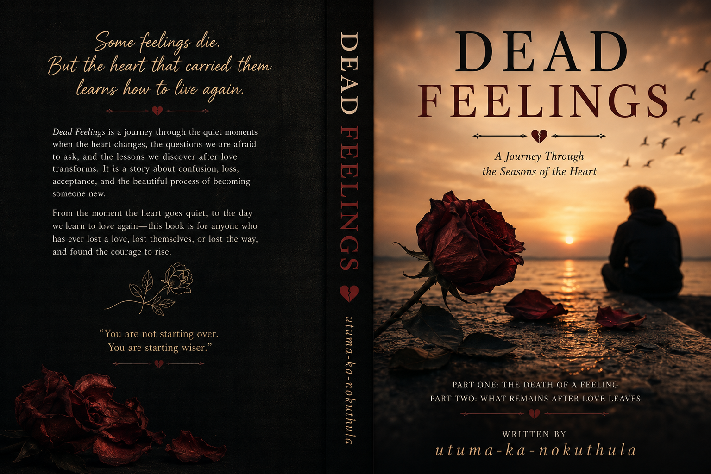

By utuma-ka-nokuthula

There are mornings when we wake up and something feels missing. Not a person. Not a place. Not even a memory. Something inside us feels silent, like a room that used to carry music but now only carries echoes. And we start asking questions: Did I ever love them? Was everything I felt real? Was I just attached to the idea of them? Because yesterday, their name could change our whole mood. Yesterday, we waited for their messages. Yesterday, we wanted to tell them everything. But today… The replies become shorter. The conversations feel heavier. The excitement disappears. And the heart starts moving like it is looking for somewhere else to live. Is this what happens when feelings die? Or is it just the moment when the fantasy ends and reality begins? Sometimes we don't fall out of love because someone hurt us. Sometimes nothing dramatic happens. Sometimes the person is still good, still caring, still trying… But something inside us has changed. Maybe we loved the version of them we created in our minds. Maybe we were still learning who they truly were. Maybe when their real colors appeared, our feelings realized they were not where they belonged. But the hardest question remains: Is it fair to leave someone because your heart is no longer where it used to be? Is staying while pretending love is still alive more painful than leaving? Maybe feelings are like seasons. Some arrive unexpectedly. Some stay longer than we thought. Some leave quietly without saying goodbye. And maybe the most honest thing we can do is not to blame the person or ourselves… but to accept that sometimes a heart can change before we understand why.
There are deaths that leave bodies behind. And there are deaths that leave people breathing. This is the story of feelings that slowly disappear, of hearts that wake up different, and of the questions that remain when love begins to change.
“The moment you wake up and realize something inside you feels different.”
There are mornings when you wake up… and before your eyes even open completely, you already feel it. Something is different. You cannot explain it. You cannot point at the exact moment it happened. You cannot find the place where everything changed. But somewhere between yesterday and today, something inside you became silent. The same room. The same bed. The same phone beside you. The same name that once brought a smile to your face. But the feeling is gone. And that is the part that scares you the most. Not because someone hurt you. Not because someone betrayed you. Not because there was a fight that ended everything. No. Sometimes the heart becomes quiet without making any noise. Sometimes feelings leave like a guest who does not say goodbye. They just gather their things in the middle of the night and disappear. And when you wake up, you are left standing in the empty room of your own heart, wondering: "When did this happen?" "Where did the love go?" "Was it ever there?" Yesterday, their message was something you waited for. Their voice was something you searched for in a crowded world. Their happiness became connected to your own. You wanted to know how their day went. You wanted to tell them every small thing. You wanted to protect their heart from the things that once broke yours. But now… The same message feels ordinary. The same conversation feels like a responsibility. The same words that once gave you butterflies now only create silence.
And you start fighting with yourself. Because how can someone who meant so much suddenly feel so far away? How can a heart that once ran toward someone suddenly begin walking away? You begin questioning your own memories. "Did I really love them?" "Was I just lonely?" "Was I in love with them, or was I in love with the feeling of being loved?" Those questions are heavy. Because sometimes the hardest person to understand is yourself.We understand when someone else changes. We understand when someone walks away. We understand when someone gives us a reason. But how do you understand a heart that changes without giving you an explanation? Maybe the heart is more mysterious than we admit. Maybe love is not always a straight road. Maybe sometimes it is a journey through seasons. There are seasons where someone feels like home. There are seasons where their presence feels like peace. There are seasons where you thank God that your paths crossed. And then, sometimes, a season changes. Not because the person became bad. Not because they were not enough. But because something inside you is no longer standing in the same place. And that truth can hurt. Because there is a special kind of sadness in losing feelings for someone who never gave you a reason to leave.
It feels unfair. You look at them and think: "They are still kind." "They still care." "They are still trying." So why is my heart becoming distant? Why am I searching for an emotion that used to come naturally? Maybe this is the part of love nobody prepares us for. Nobody teaches us how to handle the death of a feeling. We know how to mourn people we lose. We know how to cry over endings. We know how to heal from heartbreak. But what do you do when the thing that died was inside you? When the person is still there, but the feeling that connected you to them is slowly disappearing? Maybe we are not always losing people. Sometimes we are losing the version of ourselves that existed with them. The person who smiled differently. The person who waited for messages. The person who believed this was forever. And maybe that is why it hurts. Because we are not only saying goodbye to a relationship. We are saying goodbye to a version of ourselves. But even in this confusion, there is something we must remember: A changing heart does not mean love was fake. A feeling ending does not erase the moments that were real. The laughter was real. The care was real. The memories were real. Some things can be true for a season without being meant for a lifetime. Maybe God allows some people to enter our lives not only to stay, but to teach us. To teach us how to love. How to forgive. How to understand ourselves. How to accept that even beautiful things can change. The morning the heart went quiet is not always the morning everything ends. Sometimes it is the morning we begin listening. Listening to the parts of ourselves we ignored. Listening to the truth we were afraid to face. Listening to the silent changes happening inside. Because the heart speaks softly.And sometimes… before it leaves a place,it whispers goodbye long before we are ready to hear it.
“The confusion of asking whether you loved the person or only loved how they made you feel.”
There is a question that visits us after the silence begins. A question that sits beside us in the quiet moments. A question that feels heavier than the answer itself: "Did I love them, or did I just love having them?" Because sometimes the heart does not only miss a person. Sometimes it misses a routine. The morning messages. The late-night conversations. The feeling of knowing someone was waiting for you. The comfort of having a place where your thoughts could rest. And when those things disappear, we confuse the emptiness with love. We think: "I miss them." But maybe what we miss is the version of life that existed when they were there. Maybe we miss being chosen. Maybe we miss being needed. Maybe we miss the warmth of knowing someone cared. And that is where the heart becomes a difficult place to understand. Because love and attachment can wear the same clothes. They can sound the same. They can feel the same. They can both make you afraid of losing someone. But they are not always the same. Love says: "I want you to be happy, even when I cannot control the outcome." Attachment says: "I am afraid of losing what you give me." Love allows someone to be a person. Attachment sometimes turns someone into a place where we hide from our own loneliness. And maybe this is why some feelings disappear when reality arrives. Because in the beginning, we sometimes fall in love with a dream. A dream of who someone could be. A dream of how they make us feel. A dream of the future we imagined together. We create a beautiful picture in our minds. Then one day, life brings the real person in front of us. Not the perfect version. Not the version created by our expectations.
The human version. The one with fears. The one with flaws. The one with habits we did not see before. The one with a story we are still learning. And that moment becomes a test.Because loving an idea is easy. But loving a person requires understanding. It requires patience. It requires seeing beyond the surface. It requires accepting that nobody comes without imperfections. Sometimes feelings disappear because we never truly loved the person. We loved the way they made us feel. We loved the attention. We loved the comfort. We loved having someone who made the lonely days easier. And when those feelings became normal, we wondered why the excitement was gone. But maybe love was never supposed to survive only on excitement. Fire is beautiful when it first starts. It shines. It dances. It demands attention. But real warmth is not always a flame. Sometimes it is a quiet light that remains when the excitement becomes peaceful. The difficult question is: When the butterflies leave, did love leave too? Or did love simply enter a deeper stage where it no longer needs to scream to prove it exists? Maybe we live in a world that teaches us to chase feelings. "If it feels good, stay." "If it feels different, leave." But the heart is not always a reliable compass when it is only searching for comfort.
Sometimes we must ask deeper questions: "Do I still respect this person?" "Do I still care about their heart?" "Do I still want to understand them?" "Am I leaving because love is gone, or because the excitement is gone?" Because there is a difference between losing interest and losing patience. There is a difference between a relationship ending and a relationship entering a difficult season. Sometimes the heart gets tired. Sometimes it needs healing. Sometimes it needs honesty. Sometimes it needs to remember why it started. But sometimes, after all the questions, the truth remains: You can care about someone deeply and still realize your path is changing. You can appreciate what someone gave you and still know that something inside you has moved. And maybe that is one of the hardest lessons about love: Not every person we love is someone we are meant to hold forever. Some people are chapters. Beautiful chapters. Painful chapters. Necessary chapters. They teach us something about love, about life, and about ourselves. So before we ask: "Why did my feelings die?"Maybe we should ask: "What was I truly loving?" The person? The feeling? The comfort? The dream? Or the truth of who they really were? Because sometimes the heart does not lose love. Sometimes the heart finally learns the difference between love and attachment.
The moment you see someone's true character and your feelings begin to shift.”
There is a moment in every connection when the dream begins to meet reality. A moment when the picture we painted in our minds starts losing its perfect colors. At the beginning, everything feels like a beautiful story. We see the best parts. We notice the little things. We forgive the things we do not understand. We fill the empty spaces with hope. We do not just see the person. We see the possibility of who they could become. We imagine the future before we have fully understood the present. We create a version of them inside our hearts. A version that always knows what to say. A version that always understands. A version that never disappoints. And then life does what life always does… It reveals what was hidden. Not because the person was pretending. Not because they were a lie. But because no human being can stay a perfect image forever. Eventually, everyone steps out from behind the version we first met. The smiles become normal. The conversations become deeper. The hidden fears begin to appear. The weaknesses we never noticed become visible. And that is where love faces one of its greatest questions: Can I still choose you now that I see you clearly? Because it is easy to love someone's light. But what happens when you see their shadows? What happens when you discover the parts of them they were afraid to show? What happens when the person you imagined is replaced by the person standing in front of you? Sometimes, this is where feelings begin to move. Not because someone became worse. But because the truth is different from the story we created. Maybe we expected a person who would always understand our silence, but we found someone who struggles to listen. Maybe we expected someone who would heal our wounds, but we found someone who carries their own. Maybe we expected love to remove our problems, but we discovered love also requires us to face them. And suddenly, the heart becomes confused. Because now we have to decide: "Am I losing feelings because this person is not who I thought they were?" Or:"Am I losing feelings because I was never ready to love a real person?" A dream is easy to love. A dream never argues. A dream never disappoints. A dream never has bad days. But a person does.
A person gets tired. A person makes mistakes. A person has scars from battles you never witnessed. And sometimes we leave too quickly because reality does not look like the fantasy we created. We forget that even the most beautiful things have imperfections. A flower is still beautiful even with its thorns. A song is still beautiful because it has both high and low notes. A person is still worthy of love while carrying their unfinished parts. But there is also another truth. Not every difference should be ignored. Not every pain should be accepted. Not every change should be forced. Sometimes reality reveals something important. Sometimes the things we discover are not just imperfections. Sometimes they reveal that two hearts are walking in different directions. And that realization can be painful. Because you remember who they were when you first met. You remember the excitement. You remember the hope. You remember the promises you made in your heart. And you wonder: "Where did that person go?" But maybe they did not disappear. Maybe you are finally seeing them completely. And maybe the person you loved was not fake. Maybe they were just a part of a bigger story you had not finished reading. The heart struggles when the dream dies. Because we do not only mourn people. Sometimes we mourn the future we imagined with them. The places you thought you would go. The memories you thought you would create. The forever you quietly believed in. And that kind of loss is difficult because nobody else can see it. They only see two people. But you see a whole world that existed inside your imagination. Still, there is wisdom in accepting reality. Because love cannot survive forever on imagination. Love needs truth. It needs two people who are willing to see each other completely and still say: "I know who you are, and I choose to understand you." Not the perfect version. Not the version I created. The real you. Maybe the heart does not change because the person failed. Maybe sometimes the heart changes because the truth finally arrived. And when reality meets the dream, we discover what our feelings were truly built on. Was it a fantasy? Was it comfort? Was it fear of being alone? Or was it something strong enough to survive the moment when the beautiful illusion disappeared? Because real love is not found when someone looks perfect. Real love is discovered when we finally see the human being behind the dream.
“The battle between knowing someone is good to you and still feeling your heart walking away.”
There is a different kind of pain that comes when you want to leave someone who never gave you a reason to hate them. Because anger makes leaving easier. Betrayal makes the door easier to close. Hurt gives us an explanation. But what happens when the person is still kind? What happens when they still care? What happens when they are still trying to hold a relationship that your heart has already started releasing? That is where guilt enters. A quiet voice inside you asking: "How can I leave someone who did nothing wrong?" And that question can keep someone standing in a place where their heart no longer lives. Sometimes we stay because we remember the beginning. We remember how they made us smile. We remember the moments when their presence felt like peace. We remember the promises we made when our feelings were stronger. And we think: "After everything we shared, how can I be the person who walks away?" So we try. We try to bring back the feelings. We read old messages. We replay old memories. We search for the emotion that used to come naturally. We tell ourselves: "Maybe tomorrow I will feel different." "Maybe the love will return." "Maybe I just need more time." But sometimes the hardest truth is accepting that forcing a feeling does not bring it back. A heart cannot be commanded like a machine. You cannot order yourself to feel something just because someone deserves it. And that is a painful reality. Because someone can be a good person and still not be your person. Someone can love you sincerely, but you can still find your heart becoming distant. Someone can be valuable, but the connection can still be changing. And this is where many people confuse kindness with commitment. They think:"Because they are good to me, I must stay." But staying without honesty can create a different kind of pain. A person deserves more than your presence.
A person deserves more than your presence. They deserve your truth. Because there is a loneliness that comes from being loved by someone whose heart is no longer fully there. It is like holding someone's hand while feeling them slowly disappear. And nobody deserves to be loved halfway. But leaving also carries its own weight. Because when you walk away from someone who did not hurt you, you have to face yourself. You have to admit: "I am not leaving because they failed." "I am leaving because something inside me changed." And that is difficult to say. Because we are often taught that every ending needs a villain. Someone must be wrong. Someone must be guilty. Someone must be blamed. But sometimes endings happen without enemies. Sometimes two people can care about each other and still arrive at different destinations. A river does not hate the land it leaves behind. A season does not hate the season before it. A flower does not hate itself when it stops blooming. Some things simply change. And maybe that is what we struggle to accept about the heart. The heart is alive. And anything alive can grow, change, and become something different. But before leaving, there is a responsibility. Not to disappear. Not to become cold. Not to punish someone for feelings they never caused. But to be honest. To speak with compassion. To remember that the person standing in front of you has a heart too. Because sometimes we are carrying our own confusion, while forgetting someone else is carrying the pain of losing us. And maybe the greatest form of love is not always staying. Sometimes love is having enough respect to stop pretending. Enough courage to speak the truth. Enough kindness to leave without destroying what was beautiful. Because a relationship ending does not mean it was a mistake. Some people come into our lives and leave fingerprints on our souls. They teach us patience. They teach us vulnerability. They teach us what it feels like to be cared for. Even if the journey ends, the meaning does not disappear. So if one day your heart becomes quiet and you find yourself standing at the edge of goodbye, remember: Do not leave because you are searching for perfection. Do not leave because feelings are no longer as exciting as they were in the beginning. But do not stay only because you are afraid of hurting someone. Love requires honesty. And sometimes the most painful goodbye is also the most respectful one. Because a heart that has stopped choosing someone should not keep asking them to wait forever.
“The pain of staying because of memories while your emotions are changing.”
There is a silent battle that many hearts fight but rarely speak about. The battle of staying when something inside you is slowly leaving. You are still there. Your body is present. Your name is still beside theirs. Your conversations still happen. Your memories still exist. But somewhere deep inside… a part of you has started saying goodbye. And that is one of the most confusing places to be. Because how do you explain losing something that nobody else can see? From the outside, everything looks normal. People see two people together. They see laughter. They see pictures. They see history. They do not see the quiet moments when you sit alone and wonder: "Why does my heart feel so far away?" You begin carrying a secret. Not a secret because you want to hide the truth forever… but because you are still trying to understand it yourself. You look at the person you once prayed for. The person you once thanked God for. The person whose name once brought peace to your heart. And you ask: "Why am I feeling different?" "Why am I struggling to give what I used to give freely?" "Why does love feel like something I have to force now?" And the hardest part is that they may still love you. They may still look at you with the same eyes. They may still believe in the future you once imagined together. While you are standing there, fighting a battle they cannot see. A battle between memory and reality. Memory says: "Remember how happy you were." "Remember everything you shared." "Remember the promises." But reality whispers: "Something has changed." And the heart becomes a place of conflict. Because you do not want to become the person who breaks someone's heart. You do not want to be the reason someone questions their worth. So you try to love harder.You reply faster. You show more interest. You recreate old moments. But sometimes pretending to feel something is more painful than admitting that the feeling has changed. Because love is not only about being beside someone.
It is about being connected. It is about showing up with a heart that is present, not just a body that stayed. There is a difference between commitment and pretending. Commitment says: "We are going through a difficult season, and I am willing to work through it." Pretending says: "I am no longer here emotionally, but I am afraid to leave." And sometimes fear makes us hold onto things that are already changing. Fear of loneliness. Fear of regret. Fear of hurting someone. Fear of wondering if we made the wrong choice. But fear is not the same as love. A person deserves to be chosen, not just kept. They deserve someone who sees them and still wants to move closer. Not someone who stays because leaving feels too difficult. But this does not mean every difficult season means love is dead. Sometimes hearts become tired. Sometimes life becomes heavy. Sometimes stress creates distance. Sometimes people forget how to reach each other. And sometimes what feels like the end is only a place where healing and effort are needed. The question is not only: "Do I still feel the same?" The deeper questions are: "Do I still care?" "Do I still want to understand them?" "Do I still want to fight for this?" "Am I tired, or am I truly finished?" Because love is not always a feeling that burns loudly. Sometimes love is a quiet decision. A decision to listen. A decision to grow. A decision to choose someone even after the first excitement has faded. But there comes a moment when honesty becomes more loving than staying. A moment when you have to stop holding someone in a place where your heart has already left. Because keeping someone close while your soul is far away creates a wound for both people. You are not only hurting them. You are also losing pieces of yourself by pretending. Maybe this is why some endings feel like funerals. Because nobody died. Nobody betrayed anyone. But something beautiful reached its final page. And closing a beautiful book can still make you cry. The memories do not become meaningless because the story ended.The love was not fake because it changed. The chapter mattered because it existed. So if you ever find yourself loving someone you no longer feel… do not rush to hate yourself. Do not erase the good moments. Do not pretend the past was a lie. Instead, be honest with your heart. Ask yourself what changed. Ask yourself what remains. Ask yourself what is fair for both souls involved. Because sometimes the kindest love is not holding on forever. Sometimes the kindest love is releasing someone with respect. And sometimes the heart does not stop caring… it simply learns that caring and staying are not always the same thing.
“Accepting that some emotions end quietly, without hatred or betrayal.”
There are funerals that happen without people gathering. No flowers. No candles. No goodbye speeches. Just a quiet moment inside the heart where you realize: Something that once lived here is no longer alive. And maybe that is one of the strangest pains a person can experience. Because how do you mourn something that nobody else can see? How do you explain missing a feeling? How do you tell someone: "I am grieving something that still exists around me"? The person is still alive. The memories are still there. The places still exist. The old messages are still saved. But the emotion that once connected everything together… has become a memory. And that is the funeral of a feeling. Not every ending comes with anger. Some endings arrive quietly. They arrive in the spaces between conversations. In the moments when you realize you no longer rush to share your news. In the moments when their name appears on your screen, and your heart does not move the way it used to. In the moments when you look back at old memories and feel warmth, but not the same longing. And that can be confusing. Because you remember loving them. You remember the excitement. You remember the hope. You remember believing that this person would always have a place in your life. So you ask: "How can something so beautiful disappear?" "How can a heart forget the song it once loved?" But maybe the heart does not forget. Maybe it simply finishes singing that particular song. Because some things are not destroyed. They are completed. A sunrise does not destroy the night. A new season does not insult the old one. A river does not apologize for moving forward. Life changes. And the heart changes with it. But we struggle with endings because we want everything beautiful to last forever. We want every person who touched our soul to stay.We want every promise made during happy moments to survive every season. But some promises are made by people who are still growing. And sometimes two people grow in different directions. Not because the love was fake. Not because the memories were meaningless. But because life keeps moving. And moving forward can feel like betrayal when someone is standing still in our memories.
There is a special kind of guilt in letting go of a feeling. Because we think: "How can I bury something that once meant so much?" But maybe the goal is not to bury it with hatred. Maybe the goal is to honor it. To look back and say: "You were real." "You mattered." "You changed me." "You taught me something." Because not everything that ends was a mistake. Some people are blessings for a chapter, even if they are not part of the entire story. Some people come into our lives and leave behind lessons we carry forever. They teach us how to open our hearts. They teach us patience. They teach us forgiveness. They teach us what we need and what we cannot become. And even when the feeling dies, gratitude can remain. That is a different kind of healing. The ability to say: "I am thankful for what we were, even if we are no longer what we were." But there is also a warning hidden inside every emotional funeral: Do not keep visiting a grave and pretending it is a home. Sometimes we spend years trying to revive something that has already completed its purpose. We hold onto old versions of people. Old versions of ourselves. Old versions of love. And we forget that life is happening in the present. The heart cannot heal while constantly chasing what it lost. Sometimes acceptance is the final act of love. Accepting that something changed. Accepting that something ended. Accepting that the person you once held close may now only exist in your memories. And that is painful. But pain does not mean it was wrong. A scar is proof that something happened. A memory is proof that something mattered.So when a feeling dies, do not turn its funeral into a place of bitterness. Do not destroy the beauty because the ending hurt. Instead, stand there quietly. Thank the feeling for the moments it gave you. Thank the person for the lessons they brought. Thank God for the season you were allowed to experience. Then, with a heart that is still learning how to breathe again… walk forward. Because some things leave our lives not to punish us… but to make space for what comes next. And maybe the deepest truth about the funeral of a feeling is this: A heart can lose what it once loved… and still remain capable of loving again.
“Understanding that a heart can close one chapter and still have the ability to open another.”
After a heart has gone quiet, after a feeling has ended, after a chapter has closed… there comes a question that many people are afraid to ask: "Will I ever feel that way again?" Because when something once felt like everything, its ending can make the world feel smaller. You begin to wonder if the love you lost was your only chance. If the connection you had was the last beautiful thing your heart would ever experience. You look at the empty space where a feeling used to live, and you wonder: "Can something grow there again?" "Can a heart that has become tired learn how to open?" "Can I trust myself with someone new?" Because losing feelings does not only change how we see another person. Sometimes it changes how we see ourselves. We start questioning our own hearts. "Why did I change?" "Why could I not keep feeling the same?" "Will I hurt someone else the way I was hurt?" And these questions follow us into new beginnings. Because every ending leaves behind a lesson. Some lessons are gentle. Some lessons are painful. But every experience teaches the heart something. Maybe you learned that love is more than excitement. Maybe you learned that communication matters. Maybe you learned that you should not lose yourself while trying to hold onto someone. Maybe you learned that a person's kindness is valuable, but your honesty is valuable too. And with every lesson, the heart becomes wiser. Not colder. Wiser. Because healing is not about building walls so high that nobody can reach you. Healing is learning how to open the door without forgetting that you also have a home inside yourself. Sometimes after a relationship ends, we become afraid of love. We think: "What if it happens again?" "What if I lose feelings again?""What if I hurt someone who truly cares about me?" But love was never meant to be controlled like a machine. The heart is not a promise that nothing will ever change. The heart is a journey of understanding, growing, and choosing. And maybe the purpose is not to find someone who makes us feel the same forever. Maybe the purpose is to find someone we can continue choosing through the changes. Because every love story has different seasons. There will be days of excitement. There will be days of silence. There will be moments when two people have to choose each other beyond emotions.
Real love is not only found in the beginning. It is discovered in the decisions we make after the beginning fades. But before loving someone new, there is something important: Learn to sit with yourself. Learn to enjoy your own company. Learn that your heart is valuable even when nobody is holding it. Because if you enter a new relationship only to escape an old wound, you may carry yesterday's pain into tomorrow's love. A new person cannot heal every part of you. A new relationship cannot replace the work your own heart needs. Sometimes the greatest love story begins when you finally understand yourself. When you stop asking: "Who will choose me?" And begin asking: "Am I choosing myself too?" Because a healthy love is not two incomplete people searching for someone to complete them. It is two people who know their worth and choose to walk together. And maybe one day, when love finds you again, it will not feel exactly like before. It may not be the same fire. It may not be the same rush. It may not arrive with the same excitement. Maybe it will be calmer. Maybe it will be deeper. Maybe it will feel less like a storm and more like peace. Because the love we find after we have grown is different. It is not based only on dreams. It is built on understanding. It is not only about being seen in our best moments. It is about being accepted in our human moments. It is not only about finding someone who makes our heart race. It is about finding someone who makes our soul feel safe. And when that day comes, you may look back at the feelings you lost and understand something: They were not wasted.They were not failures. They were teachers. They showed you how deeply you can care. They showed you what your heart needs. They showed you what kind of love you want to build. So do not fear the silence after an ending. Sometimes silence is where healing begins. Sometimes an empty space is not a punishment. Sometimes it is room being prepared for something new. Because the heart has a strange and beautiful ability: It can break. It can become tired. It can lose what it once held close. And still… after everything, it can learn to love again.
Not every ending is destruction. Some endings are invitations. After feelings die, the heart must learn how to live again.
"The strange emptiness after someone is gone — when you miss the presence but accept the ending.”
There is a silence that comes after an ending. Not the kind of silence where there is nothing to hear. A different kind. The kind where everything around you continues moving, but something inside you feels still. The world does not stop. The sun still rises. People still laugh. Life still continues. But somewhere inside your heart, there is a room that has become quiet. A room that used to carry someone's voice. Someone's name. Someone's presence. And now… only memories live there. The strange thing about goodbye is that it does not always feel real at first. Your mind understands before your heart does. Your mind says: "It's over." But your heart still waits. It still expects a message. It still remembers the old routine. It still reaches for a person who is no longer holding your hand. Because the heart does not erase someone just because a relationship ends. People leave our lives, but they do not immediately leave our memories. A person can stop being part of your present and still remain part of your story. And that is where many people struggle. They think healing means forgetting. They think moving forward means pretending nothing happened. But forgetting is not the same as healing. Healing is remembering without being destroyed. It is looking back and saying: "That chapter mattered." "It changed me." "But it is no longer where my story ends." The silence after goodbye can be uncomfortable because it introduces us to ourselves again. Before, there was a "we." Plans were made as two people. Dreams were imagined together. Decisions included another heart. Then suddenly, you are standing alone with your own thoughts. And you begin meeting parts of yourself that were hidden. The dreams you put aside. The emotions you ignored. The wounds you never faced.Sometimes we miss a person because we miss who we became around them. We miss the version of ourselves that smiled more. The version that had someone to share everything with. The version that believed the future was already written. But maybe the person was never the only source of that happiness. Maybe they simply helped you discover a part of yourself that was already there. And that is an important lesson. Because nobody should become the only place where your joy lives. A person can add beauty to your life. But your entire life cannot depend on one person staying. The silence after goodbye teaches us that. Slowly. Painfully. But deeply.
It teaches us how to stand again. How to wake up and still find meaning. How to look at an empty space and not only see what is missing, but also see what remains. And what remains is more than we realize. The lessons remain. The growth remains. The love you gave remains. The kindness you showed remains. The person you became through that experience remains. Because every connection leaves something behind. Some people leave memories. Some leave lessons. Some leave wounds that eventually become wisdom. But everyone leaves something. And maybe that is why goodbye hurts. Because we are not only saying goodbye to a person. We are saying goodbye to a version of life we thought would continue forever. The hardest part is accepting that forever is not always measured by time. Sometimes something lasting is not something that stays. Sometimes something lasts because it changed you. A song can end and still remain beautiful. A sunset can disappear and still leave the sky painted with colors. A season can pass and still be part of the earth's story. Maybe people are the same. Maybe some hearts are not meant to stay beside us forever. Maybe some hearts are meant to walk with us for a while, teach us something, and then continue their own journey. And that does not make the love meaningless. It makes it human. So if you find yourself sitting in the silence after goodbye… do not rush to fill the empty space. Do not immediately search for another person to replace what was lost. Sit with the silence. Listen to what it is teaching you.Because sometimes the quietest seasons are where we hear ourselves the clearest. Maybe you are not only losing someone. Maybe you are finding yourself again. The person you were before the relationship. The person you became during it. The person you are becoming after it. And one day, you may look back and realize: The goodbye that broke your heart was also the doorway that led you back to yourself. Because some endings do not come to destroy us. Some endings come to introduce us to the person we were always meant to become.
“When memories return and make you question whether you truly moved on.”
There are ghosts that do not live in abandoned places. Some ghosts live in memories. They appear in ordinary moments. A song plays, and suddenly you are somewhere you thought you had left behind. A familiar place brings back a conversation. A certain time of day reminds you of the moments when someone used to be part of your routine. And for a few seconds… your heart forgets that things have changed. That is the strange thing about old feelings. They do not always disappear when we decide to move on. Sometimes they return quietly. Not because we want to go back. Not because we made the wrong choice. But because the heart remembers what once made it feel alive. And memories have a way of showing us the beautiful parts while hiding the difficult ones. The mind says: "Remember why it ended." But the heart whispers: "Remember how it felt in the beginning." And suddenly, you find yourself standing between two worlds. The world that was. And the world that is. You remember the laughter. You remember the late conversations. You remember the small moments nobody else knew about. You remember the feeling of being understood. And you wonder: "Did I lose something I should have fought for?" "Did I walk away too soon?" "Was the love truly gone, or was I just tired?" Those questions can become heavy. Because sometimes the ghost of old feelings does not come to bring the person back. Sometimes it comes to test whether you have accepted the ending. Because missing someone does not always mean you belong with them. That is a difficult truth. You can miss a place you cannot return to. You can miss a season that cannot come back. You can miss a person and still know that the journey had reached its end. The heart often confuses familiarity with destiny.Because what is familiar feels safe. The old conversations. The old habits. The old version of yourself. They feel like home. But not every place that feels like home is where you are meant to stay forever. Sometimes we miss the comfort more than the person. Sometimes we miss being loved more than the relationship itself. Sometimes we miss who we were before everything changed. And that is why the ghost of old feelings can be so confusing. It brings back questions we thought we had already answered. But maybe questions returning does not mean we are going backward. Maybe it means we are healing deeper. Because healing is not a straight road.
Some days you feel free. Some days a memory arrives and reminds you of what you lost. And both days can exist. You can be grateful for what ended and still feel sadness. You can accept the goodbye and still miss the hello. You can forgive someone and still remember the pain. The heart is capable of carrying many truths at once. And maybe that is what makes it beautiful. We often think moving on means becoming someone who no longer cares. But maybe moving on means becoming someone who can care without being trapped. Someone who can say: "That was a beautiful part of my story." Without saying: "That is the only beautiful part of my story." Because the past can be a teacher, but it cannot be a home. If we keep living in old feelings, we stop experiencing new moments. We keep looking at a closed door and forget that there are other doors waiting to open. But before we open them, we must understand something: The ghost of old feelings is not always asking us to return. Sometimes it is asking us to remember. Remember that we were capable of loving. Remember that we survived losing something important. Remember that a heart can break and still remain gentle. Because the goal is not to become someone who never remembers. The goal is to become someone who remembers without losing themselves. One day, the memories will come differently. They will no longer feel like a wound being reopened. They will feel like a page in an old book. A page you can read with a peaceful heart. A page that says: "I was there." "I loved." "I learned." "I grew."And then you will turn the page. Not because the story was meaningless. But because your story continues. The ghost of old feelings may visit sometimes. Let it knock. Let it remind you of where you have been. But do not let it convince you that the past is the only place where your heart can find peace. Because some doors close not because there was nothing beautiful inside… but because there is something new waiting beyond them.
“Learning to forgive yourself for changing, leaving, or not knowing what you know now.”
There is a person we often forget to forgive. The person who made mistakes while trying to love. The person who did not always know what to do. The person who stayed too long. The person who left too soon. The person who gave too much. The person who did not know how to communicate what was happening inside. That person is us. And sometimes the hardest forgiveness is not the forgiveness we give to others. It is the forgiveness we give to ourselves. Because after an ending, the mind becomes a place full of questions. "What if I had tried harder?" "What if I had understood sooner?" "What if I had been different?" "What if I had protected their heart better?" We replay moments like old movies. Searching for the scene where everything changed. Searching for the exact moment where we could have chosen differently. But life is not lived with the knowledge we have today. We made choices with the understanding we had at that time. We loved with the heart we had at that moment. We responded with the maturity we had then. And sometimes we judge our past self using lessons we only learned later. That is not always fair. The person you were yesterday did not know everything you know today. They were still learning. Still growing. Still discovering what love meant. Maybe you hurt someone without intending to. Maybe you walked away when someone hoped you would stay. Maybe you ignored signs you should have noticed. Maybe you held onto something that was already changing. But mistakes do not mean you are incapable of love. They mean you are human. A heart that has never made mistakes is usually a heart that has never truly experienced the difficulty of loving another person. Because love is not only beautiful moments. Love also reveals our weaknesses. It shows us our fears. It shows us our insecurities. It shows us the parts of ourselves that need growth. And sometimes, the ending of a relationship is not only about losing someone. Sometimes it is about meeting yourself.Meeting the person you were beneath all the expectations. The person who was afraid. The person who needed healing. The person who was searching for answers. Maybe you were looking for someone to understand you while you had not fully understood yourself. Maybe you wanted someone to love your broken pieces while you were still learning how to hold them. And that is okay. Growth takes time. A tree does not become strong in one day. Roots grow quietly before anyone sees the branches. The same happens with people. The lessons we learn in silence become the strength we carry into the future.
Forgiving yourself does not mean pretending everything was perfect. It does not mean ignoring the pain you caused or the pain you experienced. It means looking at your past with honesty and compassion. Saying: "I could have done better." "But I was also trying." "I made mistakes." "But I am learning." "I lost something." "But I am still becoming someone better." Because shame keeps us trapped in the past. But responsibility allows us to grow beyond it. There is a difference between saying: "I am a terrible person." And saying: "I am a person who has things to learn." One destroys you. The other transforms you. Maybe the person you used to be was simply someone searching for love without knowing how to carry it. Maybe they were someone trying to protect their heart while accidentally hurting another. Maybe they were someone who needed patience, not punishment. And maybe that is why forgiveness matters. Because you cannot build a peaceful future while constantly fighting the person you used to be. You have to make peace with your own story. The chapters where you were confused. The chapters where you were afraid. The chapters where you did not have the answers. Because those chapters shaped you. They brought you here. And here is where something beautiful happens: You stop asking only: "Why did I lose that person?"And you begin asking: "What did that experience teach me?" Maybe it taught you to communicate better. Maybe it taught you not to ignore your feelings. Maybe it taught you not to promise forever when you are still discovering yourself. Maybe it taught you that love needs both emotion and wisdom. The person you used to be was not your enemy. They were a younger version of you trying to survive, trying to understand, trying to love. So forgive them. Not because everything they did was right. But because they deserve the chance to become better. Because the goal of life is not to become someone who has never made mistakes. The goal is to become someone who learns from them. And one day, when you look back at the person you used to be, do not only see the mistakes. See the journey. See the growth. See the heart that kept going. Because sometimes the person you need to forgive the most… is the person you see in the mirror.
"The painful reality of being someone's dream while they are no longer yours.”
There is a quiet pain that comes with being loved by someone whose heart is still holding onto you… while your own heart is slowly letting go. It is a painful place to stand. Because you see their effort. You see the way they care. You see the way they choose you. You see the way they keep believing in something that you are struggling to feel. And that is what makes it difficult. If they were cruel, leaving would be easier. If they did not care, walking away would not feel so heavy. But what do you do when someone gives you a love you cannot return in the same way? What do you do when someone's greatest gift becomes the thing that makes you feel guilty? You begin carrying a weight that nobody else can see. Every kind word feels heavier. Every sacrifice feels like a reminder. Every "I love you" creates a question inside you: "Why can't I say it with the same meaning anymore?" And sometimes you start blaming yourself. You think: "Maybe I should force it." "Maybe if I try harder, my feelings will return." "Maybe if I remember all the good things, my heart will change." But the heart does not work like a debt that must be repaid. Someone's love for you does not create an obligation for you to feel the same way. Gratitude is not the same as love. Appreciation is not the same as connection. And kindness, as beautiful as it is, cannot force two hearts to beat in the same rhythm. This is one of the hardest truths about relationships: A good person can love you deeply and still not be the person your heart chooses. And that truth hurts because nobody is the villain. Sometimes there is no betrayal. No great mistake. No person to blame. Just two hearts standing in different places. One heart is reaching forward. The other heart is trying to understand why it cannot reach back.And the person who loves more often carries their own silent pain. They feel the distance. They notice the changes. They sense the moments when your words sound different. And even if you do not say it, hearts are sensitive. They recognize when they are being held by someone who is no longer holding them the same way. That is why honesty matters. Because a person can survive an ending. But living inside a love where they are slowly becoming alone is much harder. Nobody deserves to spend their days trying to convince someone to choose them. Love should not feel like begging for a place in someone's heart. But honesty must come with compassion. Because the person who loves you is not a problem to remove. They are a human being with feelings, memories, and hopes. They trusted you with a part of themselves. So if you must leave, do not leave by becoming cold. Do not pretend they meant nothing. Do not destroy their image just to make your decision easier. Sometimes people rewrite the past to make endings less painful. They say: "They were never right for me." "They were not special." "It was all a mistake." But that is not always true. Someone can be a beautiful part of your life and still not be someone you continue walking with. Two things can exist together: "They were good to me." And: "I cannot continue." That is a painful truth, but it is also an honest one. Because love is not only about receiving someone's heart. It is also about respecting it. Sometimes the greatest kindness you can give someone is freedom from a love that is no longer fully present. Not because they were not enough. Not because they failed. But because they deserve someone who looks at them and feels certain. Someone who does not have to search for reasons to stay. Someone who chooses them not from guilt, but from genuine love. And if you are the person who loves more… remember this: Someone's inability to love you the way you need does not reduce your value. A flower does not become less beautiful because it grows in the wrong garden. Sometimes the soil is not the problem. Sometimes the seasons simply do not match. And if you are the person whose heart has changed…remember this: Handle someone's love carefully. Do not take it for granted. Do not keep someone close only because you are afraid of being alone. Do not accept a love you cannot honor. Because every heart deserves truth. In the end, love is not measured only by how long someone stays. Sometimes love is also measured by how gently someone lets go. Because there is a difference between leaving someone… and abandoning them. One is honesty. The other is cruelty. And the heart that truly understands love will always choose honesty with kindness.
“Understanding that not every emotion needs an immediate answer.”
There is a lesson the heart learns only through time: Not every feeling needs an immediate answer. We live in a world that wants everything quickly. Quick happiness. Quick healing. Quick decisions. Quick endings. We want to know today what tomorrow will reveal. We want certainty before we have finished growing. But the heart does not always work like that. Some things need time. Some answers arrive slowly. Some feelings need silence before they can explain themselves. Because sometimes we mistake a difficult season for the end of a story. We feel tired and think: "I do not love anymore." We feel confused and think: "This must be over." We feel distant and think: "The connection is gone." But not every quiet season means something has died. Sometimes the heart is simply tired. Sometimes life has placed too much weight on it. Sometimes stress, fear, wounds, and exhaustion create a distance that feels like a goodbye. And this is where patience becomes important. Not the kind of patience where we ignore pain. Not the kind where we force ourselves to stay somewhere we no longer belong. But the kind of patience where we allow ourselves to understand before we decide. Because a rushed heart can mistake temporary emotions for permanent truths. There are moments when we wake up feeling different. Moments when we question everything. Moments when our emotions become cloudy. And in those moments, wisdom asks: "Is this truly what I feel?" "Or is this simply what I feel today?" Because feelings are real, but they are not always complete. A storm is real. But a storm is not the whole sky. A difficult day is real. But a difficult day is not the whole life. The heart that learns patience learns to separate a moment from a meaning.It learns not to destroy a whole garden because one flower stopped blooming. It learns to ask deeper questions. "Have I stopped loving?" "Or have I stopped showing love?" "Have we lost our connection?" "Or have we stopped trying to understand each other?" "Am I leaving because my heart is truly finished?" "Or am I running because something became difficult?" These questions require honesty. And honesty requires courage. Because sometimes the answer is not what we hoped. Sometimes patience reveals that the feeling is gone. But sometimes patience reveals that the feeling was simply buried beneath everything we were carrying. That is why rushing can be dangerous. A heart needs time to listen to itself. It needs time to heal old wounds. It needs time to recognize the difference between peace and emptiness. Because peace feels like acceptance. Emptiness feels like losing yourself. And learning that difference is part of growing. The patient heart also learns something important: Love is not only found in the moments when everything feels easy. Anyone can love during beautiful seasons. Anyone can stay when everything feels perfect. But deeper love is revealed when two people face change. When conversations become harder. When understanding requires effort. When both hearts must choose whether they are willing to grow together. But patience does not mean waiting forever. A patient heart is not a trapped heart. It knows when to hold on. And it knows when to release. Because patience without wisdom becomes suffering. And letting go without understanding becomes regret. The heart needs both: The courage to fight for what matters. And the courage to accept what has changed. Maybe that is why time is such a powerful teacher. Time reveals what emotions hide. Time shows whether something was only a passing feeling or something deeper. Time reveals whether a connection can survive beyond excitement. Time teaches us that not every silence is an ending. And not every ending is a failure. Some answers cannot be forced. Some paths cannot be rushed. Some healing cannot be demanded. They come when they are ready.Like a seed beneath the soil. For a long time, nothing appears. But beneath the surface, something is happening. Growth is happening. Transformation is happening. The heart is learning. So be patient with your heart. Not because every feeling will return. Not because every relationship will last. But because your heart deserves to be understood before it is judged. One day, you will look back and realize: The waiting was not wasted. The silence was not empty. The confusion was not meaningless. It was the place where your heart learned wisdom. Because a heart that has learned patience does not love blindly. It loves with understanding. It does not hold on because it is afraid. It does not let go because it is tired. It listens. It learns. It chooses. And that is when love becomes more than a feeling. It becomes wisdom.
“How every person leaves lessons, even when they leave our lives.”
There is a misunderstanding about endings. We often believe that when something ends, everything connected to it disappears too. We think a goodbye means the memories become meaningless. We think a person leaving means the love they gave us was wasted. But maybe that is not true. Maybe some love is not meant to stay in our hands forever. Maybe some love is meant to leave something behind. A lesson. A memory. A change inside our hearts. Because every person who enters our life touches a part of us. Some touch our happiness. Some touch our pain. Some touch places inside us that we did not even know existed. And when they leave, they do not leave us exactly as they found us. Something remains. The way they taught us to communicate. The way they showed us kindness. The way they challenged us to grow. The way they helped us discover what our hearts needed. Even the difficult moments can carry lessons. The misunderstandings. The disappointments. The moments where two people tried but could not reach each other. They all become part of the story. Not every lesson arrives wrapped in comfort. Some lessons arrive through tears. Some arrive through silence. Some arrive after we lose something we thought we would keep forever. But pain can also be a teacher. It can show us where we need healing. It can show us what we ignored. It can show us the kind of love we want to give and the kind of love we want to receive. And maybe that is why we should not hate the chapters that ended. Because the ending does not erase the beauty that existed before it. A flower does not become worthless because it eventually falls. A song does not become meaningless because the final note is played. A sunset does not become less beautiful because darkness follows. Some things are precious because they were temporary.We often wish people could stay forever. But maybe forever is not always about time. Maybe someone can be part of your forever without being part of your every day. Maybe the impact they left on your heart becomes something you carry into every future chapter. The love you experienced becomes part of how you love others. The patience you learned becomes part of how you treat people. The forgiveness you received becomes part of how you forgive. The pain you survived becomes part of your strength. Nothing is completely lost when we allow ourselves to learn from it. But carrying love forward does not mean carrying the past everywhere. There is a difference between honoring a memory and living inside it. A memory should be a place you visit, not a place you never leave. Because life continues. New people come. New moments arrive. New chapters wait to be written. And if we hold too tightly to what ended, we may miss what is beginning. Sometimes we carry old love like a heavy bag. We carry regret. We carry "what ifs." We carry conversations we wish we had. We carry versions of ourselves we cannot return to. But maybe love was never meant to be carried as a burden. Maybe it was meant to be carried as wisdom. Instead of saying: "I lost someone." Maybe we can also say: "I gained something." I gained understanding. I gained maturity. I gained a deeper knowledge of my own heart. Because every connection teaches us something about ourselves. The person we loved became a mirror. Through them, we saw our kindness. Through them, we saw our fears. Through them, we saw the parts of ourselves that needed growth. And that is a gift. Not every gift stays with us physically. Some gifts remain inside who we become. Maybe that is why gratitude is so powerful. Gratitude does not deny the pain. It simply refuses to let pain be the only thing we remember. It says: "Yes, it ended." "But it mattered." "Yes, I was hurt." "But I also grew." "Yes, I lost something." "But I also received something." A heart that learns gratitude becomes lighter. Because it stops fighting the past.It stops asking why something could not stay forever. And it starts appreciating that it was there at all. So when you look back at someone who was once important to you, do not only see the ending. See the whole journey. See the laughter. See the lessons. See the moments where two people tried to bring light into each other's lives. And if the road separated, bless the path they continue walking. Not every person who leaves is an enemy. Not every ending is a punishment. Some people are simply travelers who walked beside us for a while. And maybe that was enough. Because love is not only measured by how long someone stays. Sometimes it is measured by how deeply they helped us grow. The love we carry forward is not the love that keeps us trapped in yesterday. It is the love that helps us become better tomorrow. It is the proof that even after something ends… something beautiful can remain.
“Realizing healing does not mean forgetting; it means becoming wiser.”
There comes a moment after every ending when the heart faces a difficult choice. It can either build a home inside the past… or it can learn how to open the door to the future. But opening that door is not easy. Because a heart that has loved deeply does not simply reset. It remembers. It remembers the person who once mattered. It remembers the moments that felt like forever. It remembers the promises whispered during beautiful seasons. And sometimes we think healing means becoming someone who no longer remembers. But maybe healing is something different. Maybe healing is not forgetting the old heart. Maybe healing is creating a new one. A heart that remembers without being trapped. A heart that loves without losing itself. A heart that carries lessons instead of wounds. Because every experience leaves something behind. The heart you had before love was not the same heart you had after it. Love changes us. Loss changes us. Growth changes us. And that is not something to fear. A tree does not apologize for growing new branches. A river does not apologize for taking a new path. Life itself is a constant becoming. And we are part of that. Sometimes after losing someone, we search for the person we used to be. The person who trusted easily. The person who loved without fear. The person who believed every beautiful thing would last forever. But maybe we are not supposed to become that person again. Maybe we are supposed to become someone wiser. Someone who knows that love is beautiful but also fragile. Someone who understands that another person's presence is a blessing, not a possession. Someone who knows that love should be chosen, not forced. A new heart does not mean a heart that never breaks. It means a heart that knows how to rebuild. A heart that says: "I have lost before, but I am still willing to love." "I have been disappointed, but I will not become bitter.""I have said goodbye, but I will not close every door." Because the greatest tragedy is not losing someone. The greatest tragedy is allowing one painful ending to convince you that nothing beautiful can happen again. Pain can teach us. But pain should not become our identity. The scars we carry are evidence of what we survived, not a definition of who we are. And maybe one day, love will find you again. But it will not be the same love. It will meet a different version of you. A version that understands more. A version that communicates better. A version that knows the difference between needing someone and choosing someone. Because the love after growth is different. It is not built only on excitement. It is built on awareness. It is not only: "I love how you make me feel." It becomes: "I understand who you are, and I choose to walk beside you." It is not: "Never change." It becomes: "We will change, but we will learn how to grow together." A new heart understands that people are not perfect stories. They are unfinished books. Every person carries chapters we have not read. Every person has struggles we do not see. Every person is becoming. And loving someone means accepting that journey. But a new heart also understands itself. It knows that love should not require the loss of your own identity. It knows that caring for someone does not mean abandoning yourself. It knows that staying is beautiful when it comes from love. And leaving is necessary when staying destroys honesty. A healed heart does not search for someone to complete it. It searches for someone to share life with. Because wholeness is not something another person gives you. It is something you discover within yourself. And maybe that is the final lesson of dead feelings: A feeling can die. A relationship can end. A chapter can close. But the heart is not finished. The heart is not a graveyard where every goodbye leaves only emptiness. The heart is also a garden.Things can fall. Things can end. Things can return in different forms. New things can grow. So do not be afraid of becoming someone new. The person you are becoming is not a stranger. They are the result of everything you have survived. Every tear. Every lesson. Every prayer. Every moment you thought you could not continue. All of it shaped you. And maybe the greatest miracle of the heart is this: It can lose a love… and still remain capable of love. It can experience an ending… and still believe in beginnings. It can become tired… and still find the courage to open again. Because a new heart does not mean a heart that forgot. It means a heart that learned. A heart that forgave. A heart that grew. A heart that finally understands: Some people are chapters. Some people are lessons. Some people are memories. But your heart… your heart is the story that continues.
THE END